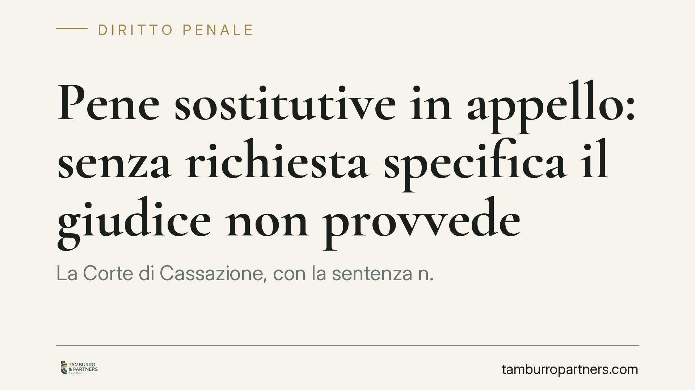

Pene sostitutive in appello: senza richiesta specifica il giudice non provvede
La Corte di Cassazione, con la sentenza n. 19648/2026, chiarisce un punto decisivo per la difesa: in appello le pene sostitutive della detenzione breve non possono essere disposte d'ufficio dal giudice. Serve una richiesta specifica e motivata nell'atto di impugnazione. Una omissione tecnica, apparentemente marginale, che rischia di precludere definitivamente un'alternativa al carcere.

Il caso
La vicenda nasce da una decisione della Corte di Appello di Potenza, che non aveva sostituito una pena detentiva breve con una sanzione alternativa. L'imputato lamentava la mancata applicazione delle pene sostitutive, sostenendo che il giudice avrebbe dovuto valutarle anche in assenza di una richiesta esplicita.
La Corte di Cassazione, Sezione II Penale, ha respinto questa impostazione. Il principio affermato è netto: in grado di appello il giudice non ha il potere di disporre d'ufficio la sostituzione della pena detentiva breve se nell'atto di gravame non è stata formulata una domanda specifica e motivata.
Inquadramento normativo
Le pene sostitutive delle pene detentive brevi sono disciplinate dall'art. 20 bis c.p., introdotto dalla riforma Cartabia. Si tratta delle sanzioni che possono prendere il posto della reclusione o dell'arresto entro determinati limiti di durata: semilibertà sostitutiva, detenzione domiciliare sostitutiva, lavoro di pubblica utilità e pena pecuniaria sostitutiva. Sono strumenti pensati per contenere il ricorso al carcere per le condanne di minore gravità.
Il nodo processuale è però altrove, nell'art. 597 comma 5 c.p.p. Questa norma individua le ipotesi in cui il giudice d'appello può intervenire d'ufficio, cioè senza una richiesta di parte, anche in favore dell'imputato. La Cassazione, con la sentenza n. 19648/2026, ha precisato che l'applicazione delle pene sostitutive non rientra tra questi poteri officiosi. In altri termini, l'iniziativa resta affidata alla difesa.
Perché la decisione conta
Il messaggio della Corte è di metodo prima ancora che di merito. In primo grado la richiesta di pena sostitutiva può emergere nella fase conclusiva del giudizio. In appello, invece, vige la regola del *devolutum*: il giudice decide entro i limiti dei motivi proposti. Ciò che non viene chiesto, di norma, non viene esaminato.
Ne deriva una conseguenza pratica rilevante. Se l'atto di appello si limita a contestare la responsabilità o a chiedere una riduzione della pena, senza una domanda espressa e argomentata di sostituzione, il giudice non è tenuto a valutarla. E non potrà più essere censurata in Cassazione la sua mancata applicazione, perché il tema non era stato devoluto.
Implicazioni pratiche per la difesa
Il rischio è concreto: un'alternativa al carcere astrattamente concedibile può andare persa per un difetto di formulazione dell'impugnazione. Non basta un accenno generico. La richiesta deve essere specifica, individuare la sanzione sostitutiva ritenuta applicabile e fornire gli elementi che ne giustificano la concessione.
La motivazione della domanda assume un peso decisivo. Le pene sostitutive non sono un automatismo: presuppongono una prognosi favorevole sulla condotta futura e, in alcuni casi, il consenso dell'imputato. La difesa deve offrire al giudice gli elementi concreti su cui fondare quella valutazione: condizioni personali, familiari, lavorative, percorsi riparativi eventualmente intrapresi.
Questo orientamento va letto anche in chiave di tempistica. Le scelte strategiche sulle pene sostitutive vanno impostate sin dalla redazione dell'atto di appello, non rinviate alla discussione orale. Un motivo non proposto nei termini difficilmente potrà essere recuperato in un momento successivo.
Cosa fare in concreto
- Inserire sempre un motivo specifico sulle pene sostitutive nell'atto di appello, quando la pena rientra nei limiti dell'art. 20 bis c.p.
- Indicare la sanzione che si ritiene applicabile, evitando richieste generiche o cumulative prive di argomentazione.
- Allegare elementi concreti a sostegno della prognosi favorevole: documentazione lavorativa, familiare, eventuali percorsi di recupero.
- Verificare il consenso dell'imputato laddove la sanzione lo richieda, formalizzandolo per tempo.
- Non affidare alla sola discussione orale la richiesta: ciò che non è devoluto con i motivi rischia di non essere esaminato.
Consigliamo di impostare la valutazione sulle pene sostitutive già nella fase di studio dell'impugnazione, trattandola come un motivo autonomo e non come una postilla. È in quel passaggio che si decide, spesso, la concreta possibilità di evitare il carcere.
Disclaimer
Contributo informativo a cura di Tamburro & Partners - Avv. Giuseppe Tamburro. Non costituisce parere legale.
Ogni condominio ha una storia a sé.
Se gestisci un'amministrazione e vuoi un confronto su una specifica questione condominiale, scrivi allo studio. Ti rispondiamo entro un giorno lavorativo.